🐾 Adote com amor · Suzano - SP
A história de Arthur e Zé
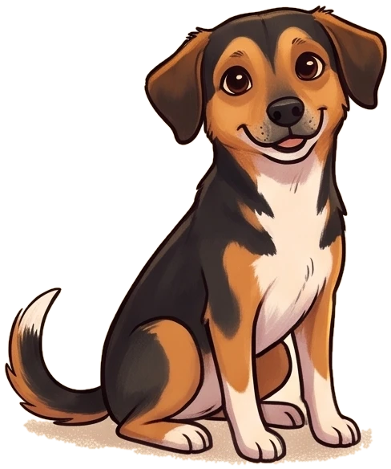
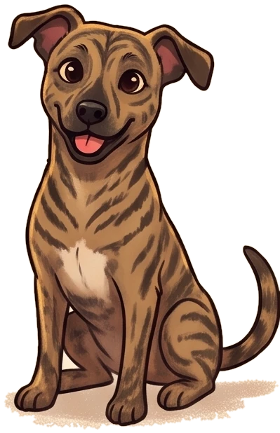
Dois resgatados, duas histórias de recomeço. Escolha uma e venha conhecer quem está procurando uma família.
Qual história você quer ler?
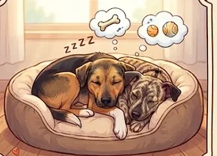
Hoje eles estão em lar temporário
Num apartamento pequeno, de quem reorganizou a casa inteira pra abrigar os dois. Estão seguros, tratados e cheios de amor pra dar. Só falta o mais importante: uma família de verdade.
Bom saber sobre os dois
- Já são rodadosAndam de carro e já passearam em shopping e parques.
- Muito amigáveisNunca deram problema com outros cachorros, e convivem com a gatinha Mia.
- Lar idealCom espaço e companhia. Presos e sozinhos por muito tempo, podem não se adaptar bem.
Alguns momentos
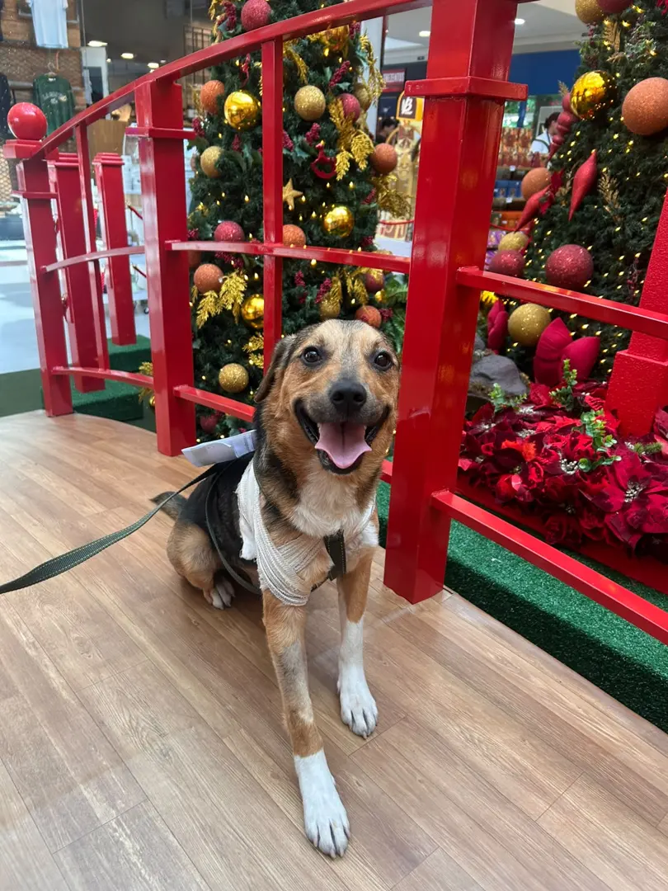
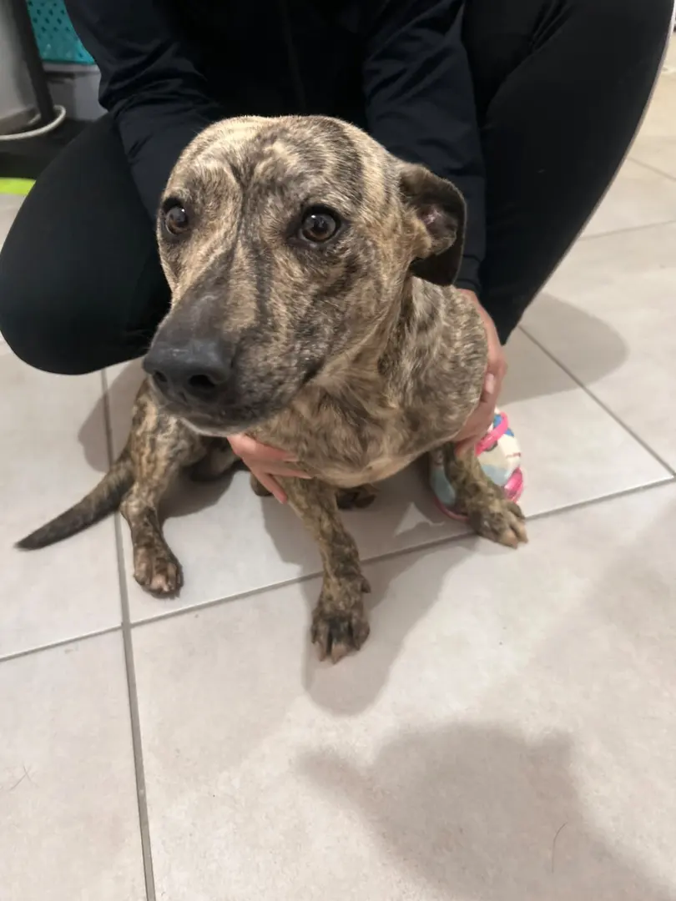
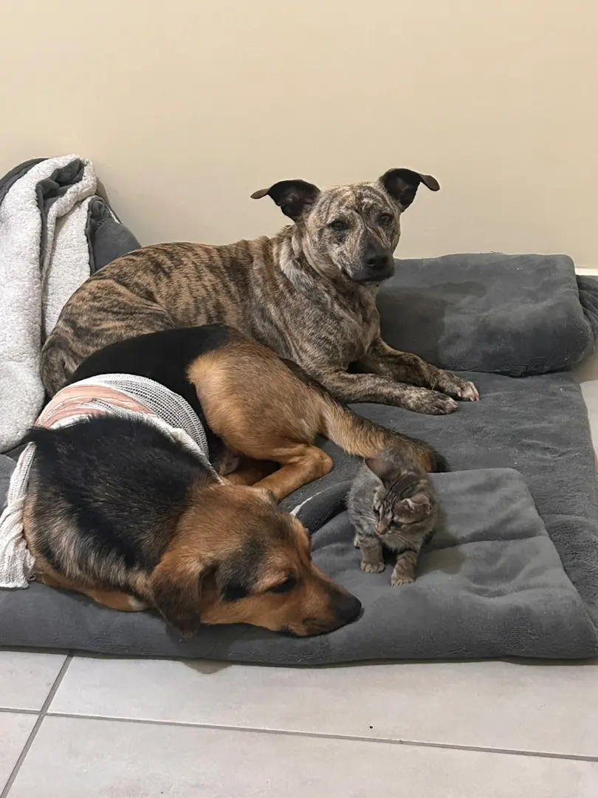
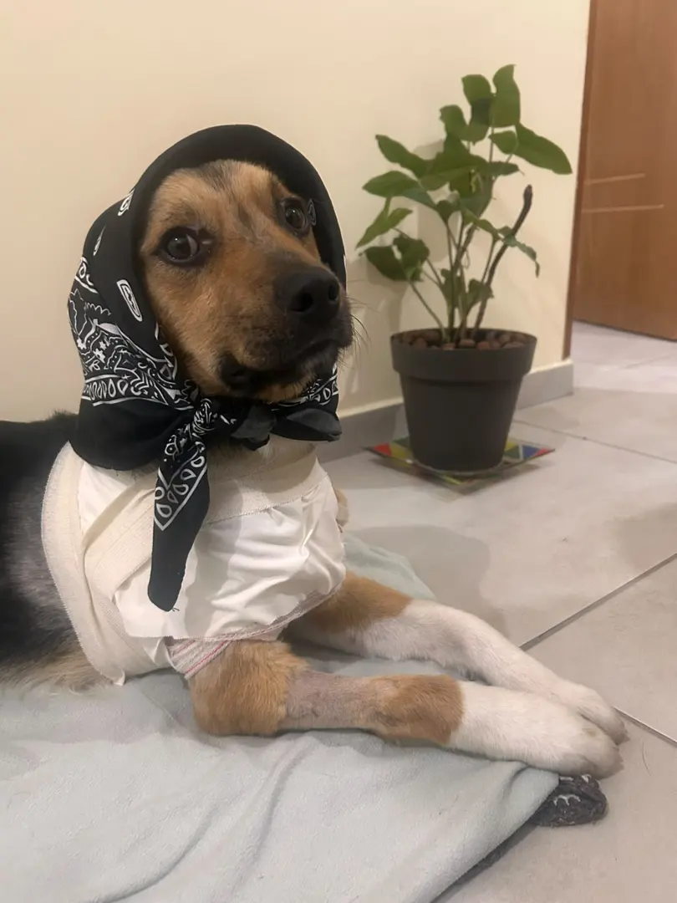
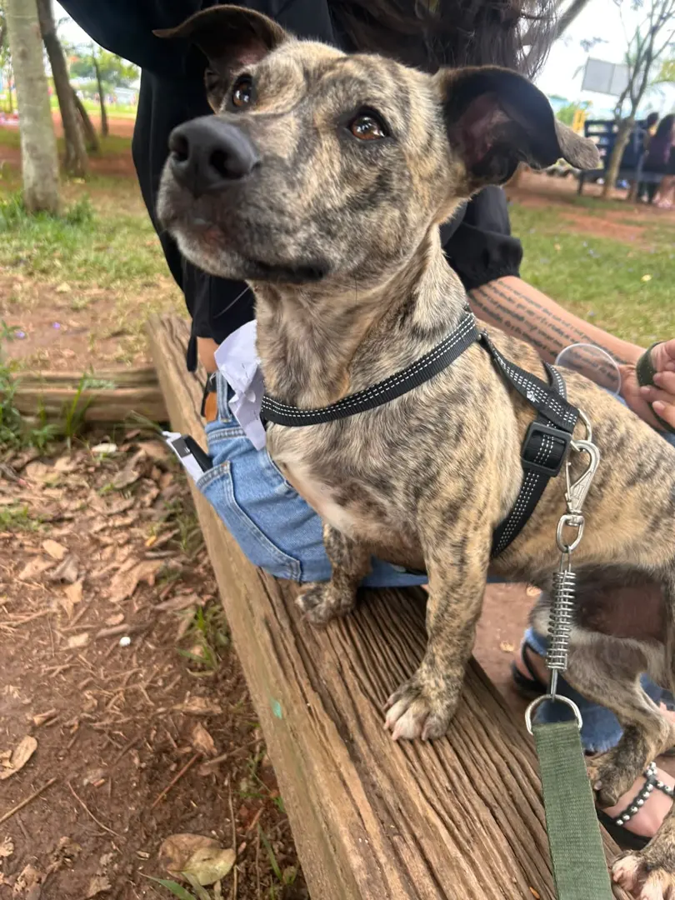
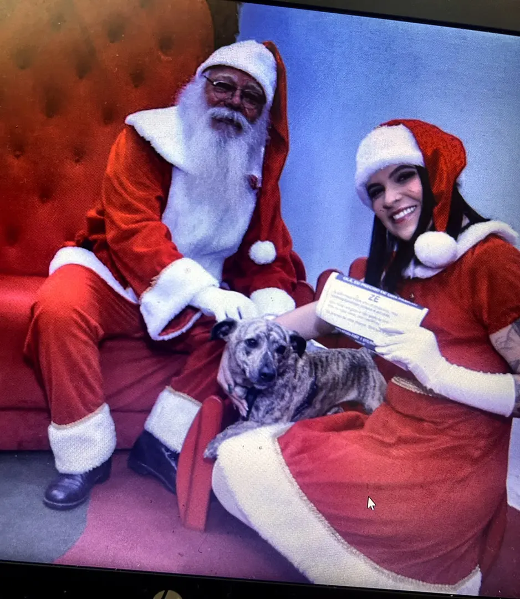
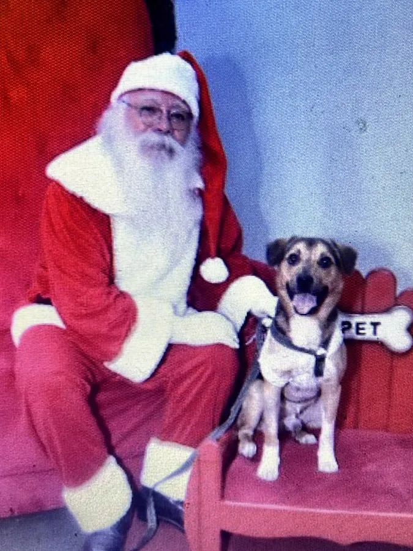
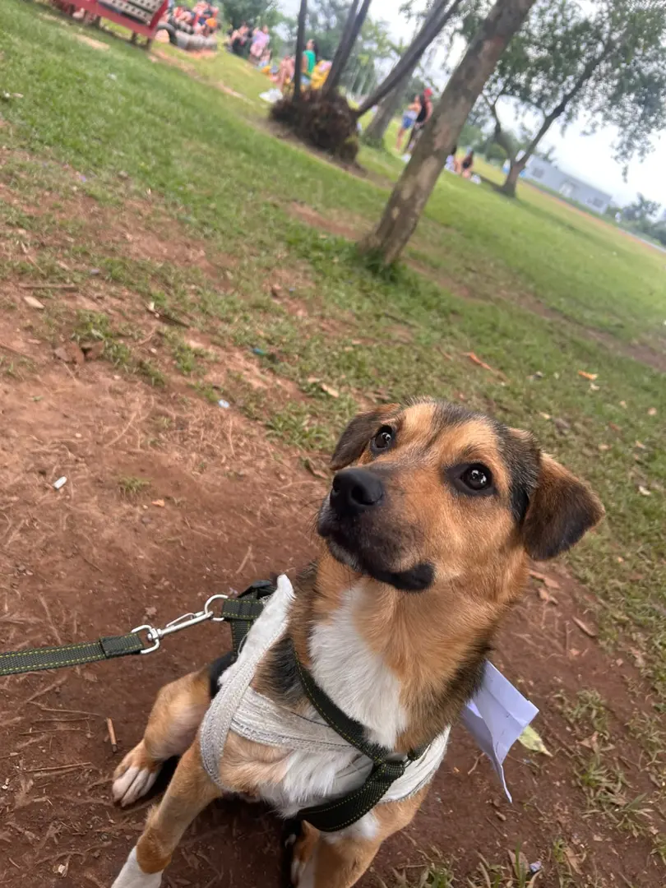
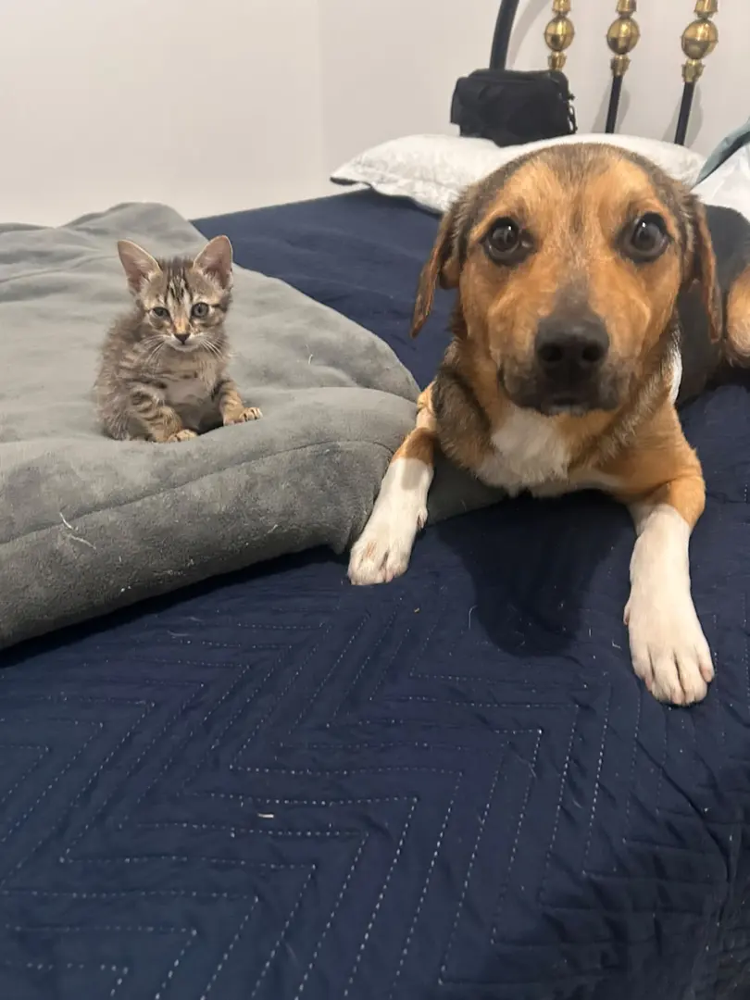
Como você pode ajudar
Adotar
Leia a história, se apaixone e chame a gente no WhatsApp.
Compartilhar
Cada compartilhamento leva a história deles a mais gente. O lar deles pode estar a um clique.
No Instagram e no TikTok, a gente prepara uma imagem pronta pra você postar.
Indicar
Conhece alguém que quer um cachorro? Mande a história do Arthur ou do Zé direto pra essa pessoa.
Como funciona a adoção
- Conheça a história e veja se o jeitinho dele combina com a sua rotina.
- Chame no WhatsApp e conte um pouco sobre você e sua casa.
- Encontro e adaptação: marcamos um encontro pra vocês se conhecerem e podemos até levar o cão até a sua casa. Queremos fazer da melhor forma, e tudo é negociável.
- Adoção responsável: um lar pra sempre, com carinho, passeios e cuidado.